<HTML>
<HEAD>
<TITLE> Create Saturn song data </​​TITLE>
</HEAD><BODY>

<P> <A HREF="sound2-5.htm"> Return to previous page </A> | <A HREF="../index.htm"> Return to menu </A> </BR> </P>
<HR>


<H2> 2-6. Creating song data for Saturn </H2>

<P>
Finally, combine all the data created so far and play the song on the target. <BR>
Please follow the steps below.
</P>

<H4> 1) Starting the sound simulator </H4>

<P> Starts the sound simulator. </P>

<H4> <A NAME="SMFFILE"> 2) Convert SMF file </A> </H4>

<P>
Convert created song data to Saturn data. <BR>
First, select “Convert Standard MIDI File” from the “Function” menu.
</P>

<H4> Figure 2-36 Selecting “Convert SMF file” </H4>
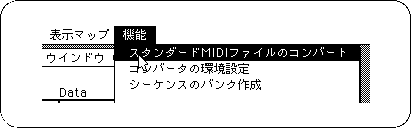

<P>
Use the “Add”, “Insert”, and “Folder” buttons to add the SMF file created in “2-4: Create a song” to the list, and click the execute button to convert.
</P>

<H4> Figure 2-37 Convert SMF file </H4>
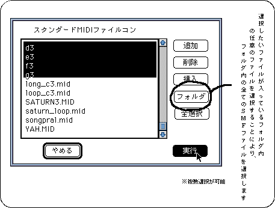

<H4> 3) Creation of sequence data </​​H4>

<P>
The converted file created in 2) is [original file name]. It becomes CNV. <BR>
Select "Create Sequence Bank" from the "Function" menu.
</P>

<H4> Figure 2-38 Select "Create sequence bank" </H4>
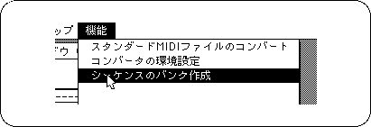

<P>
[Original file name] that is the converted data created in 2). CNV files are collected as sequence data. <BR>
At this time, the SONG numbers are assigned as 0, 1, 2,. <BR>
This SONG number is important because it is specified when the song is played.
</P>

<H4> Figure 2-39 Sequence file collector screen </H4>
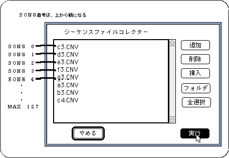

<H4> <A NAME="MAP"> 4) Create a map </A> </H4>

<P>
Select “New” to create a new file.
</P>

<H4> Figure 2-40 Creating a new map file </H4>
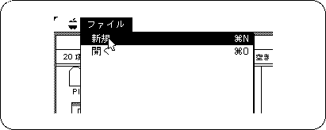

<P>
Up to 128 map information can be stored in one file. <BR>
When new, map 0 is displayed as an edit map. <BR>
Creates information that summarizes tone data and song data.
</P>

<H4> Figure 2-41 Map edit window </H4>
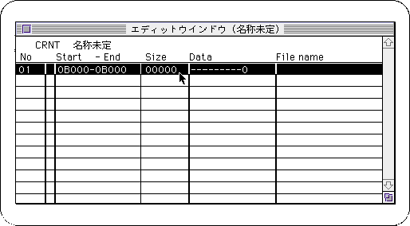

<P>
In the edit window, double-click the list part where data is set.
</P>

<P>
Since there is only one data in the newly created map, add the missing data in “New Data” of “Edit” menu. <BR>
In this way, information that summarizes the tone data and song data is created.
</P>

<P>
Set data on the screen shown in Fig. 2-42. To select a data type, click in the frame to the right of “Data Type” to open the pop-up menu shown in Figure 2-43, and select the desired data type.
</P>

<H4> Figure 2-42 Data edit window </H4>
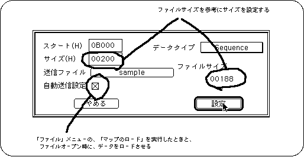

<H4> Figure 2-43 Data type setting </H4>
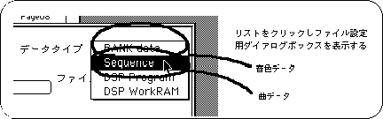

<H4> 5) Loading data </​​H4>

<P>
Select Launch Map to send data to the target.
</P>

<H4> Figure 2-44 Selecting “Start Map” </H4>
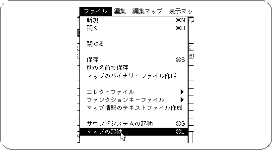

<P>
At this time, if the sound system has not been started, select [Start Sound System] from the [File] menu to start the sound system.
</P>
<P>
At this point, check the following points in the edit map window.
</P>

<H4> Figure 2-45 Edit map window </H4>
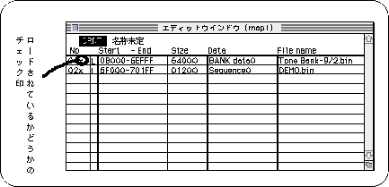

<H4> <A NAME="SOUNDS"> 6) Song performance </A> </H4>

<P>
Select “Sound Simulator” from the “Function” menu to display the Sound Simulator screen.
</P>

<H4> Figure 2-46 “Sound simulator” selection </H4>
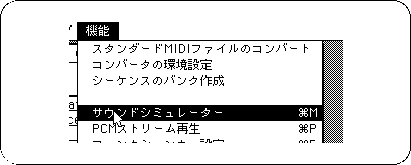

<H4> Figure 2-47 Sound simulator screen </H4>
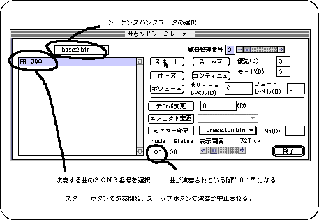

<P>
If you are not satisfied with the sound, correct the data with each software and try to link and simulate.
</P>

<H3> Note on map data size </H3>
<P>
If the target is a "sound box", it has more memory for sound than Saturn, so the final data of the map that is finally created should not exceed <B> 7FFFFH </B> Please be careful.
</P>
<P>
Since the SGL sound-related functions have been assigned 78000H or more for PCM playback, when <B> SGL is used and PCM stream playback is performed </B>, the last data in the map is <B> 77FFFH
</B> should not be exceeded.
</P>

<H4> <A NAME="FILE"> 7) Create a map binary file </A> </H4>
<P>
Select “Create map information text file” to create a map data file to be placed on Saturn. </P>

<H4> Figure 2-48 Select "Create map information text file" </H4>
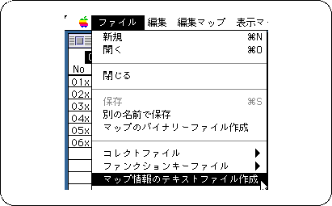

<P>
Now that all the song data has been created, the data that is actually put on Saturn requires at least the tone file binary data, sequence data, map binary file, and sound driver file used in the map. <BR>
If you are using a DSP, additional DSP program files are required.
</P>

<H4> Figure 2-49 Song data file to be passed to the programmer </H4>
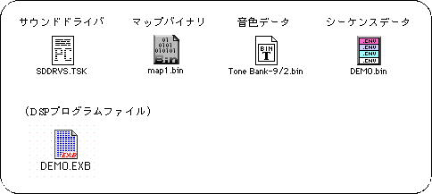
<BLOCKQUOTE>
Note: File names other than the sound driver are determined when the file is created
</BLOCKQUOTE>

<P>
In addition, when one map data has a size that can be loaded into the memory of the sound CPU 68000 at a time, it is possible to save the game program by creating a dump file that combines the tone data and sequence data in one map. I can do it. <BR>
With the data loaded, select "Combine Send Files" from the "Function" menu to create a dump file.
</P>

<H4> Figure 2-50 Selecting "Combine transmission files" </H4>
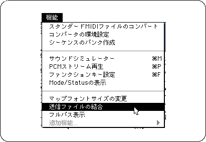

<P>
In addition to this file, the only files required by the game are the sound driver file and the map file.
</P>
 
<H4> Figure 2-51 Song data file to be passed to the programmer (using dump file) </H4>
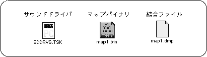
<BLOCKQUOTE>
Note: File names other than the sound driver are determined when the file is created
</BLOCKQUOTE>

<P>
All you have to do is actually put it into the game and play the song. For information on how to incorporate sound data into the game program, see “Chapter 2: Sound Data” in “Data Transfer”. Please give me.
</P>
<!--This document was created using BeyondPress (TM) 1.0.3-442446 .-->

<HR>
<P> <A HREF="sound2-5.htm"> Return to previous page </A> | <A HREF="../index.htm"> Return to menu </A> </BR> </P>
</BODY></HTML>